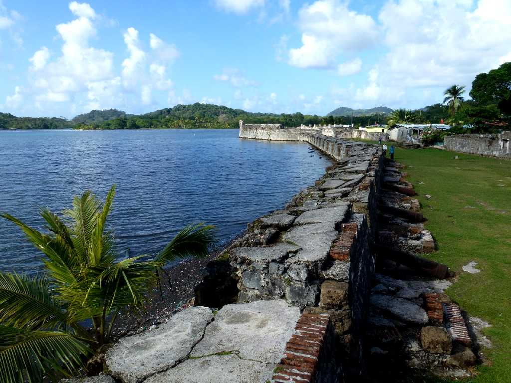
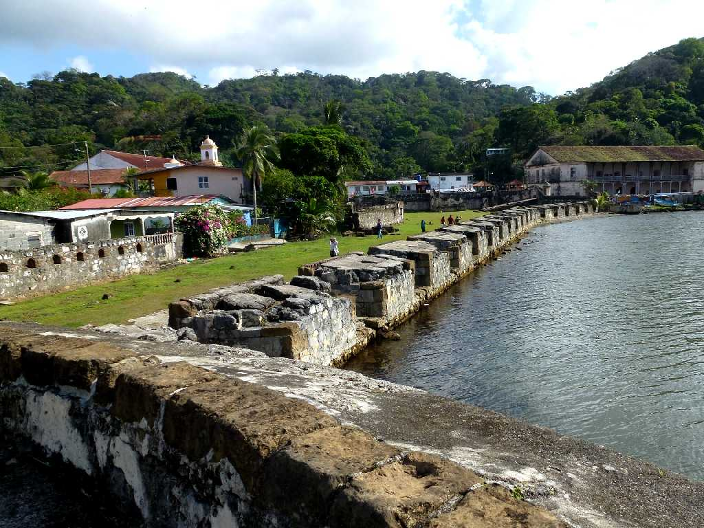
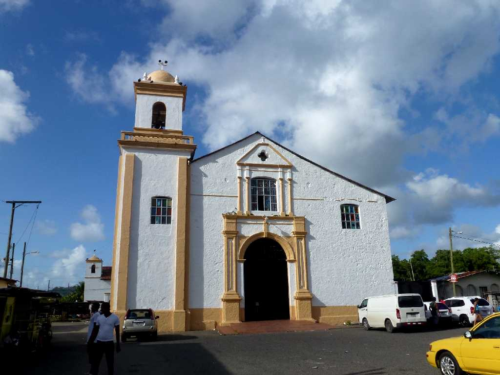
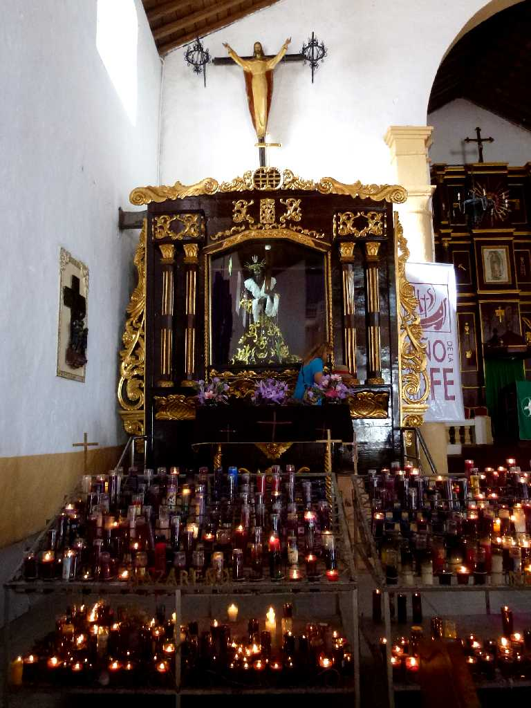
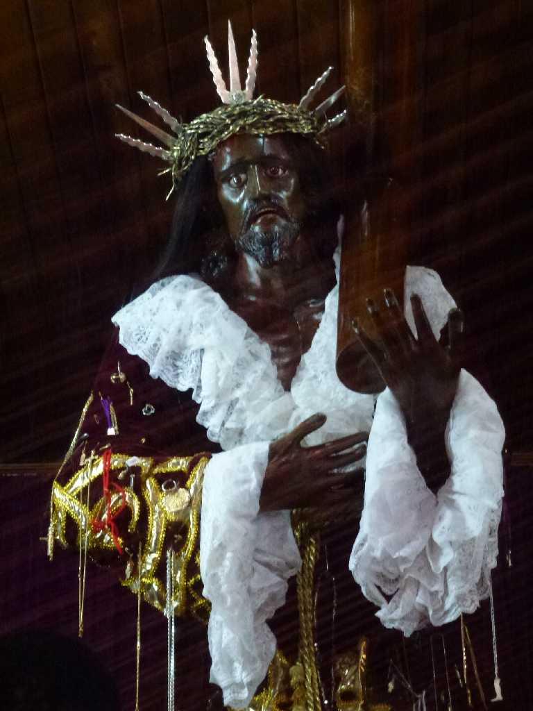
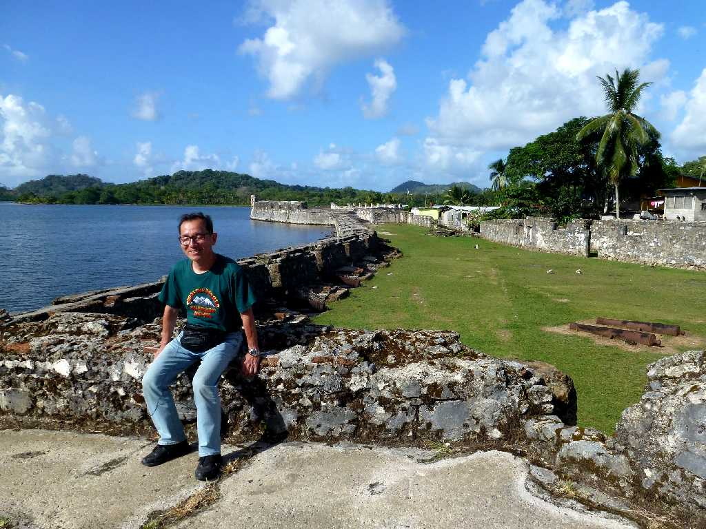

Fuerte San Jerónimo Portobelo
１６世紀にスペイン人により創られた海上交易都市のポルトベロにあるサンジェロニモ要塞

Fuerte San Jerónimo

Iglesia de San Felipe
１８１４年に創られたローマカトリックのサンフェリペ教会には海岸で発見された黒いキリスト像が祀られている
 
Cristo Negro Altar Iglesia de San Felipe

February 10 2013 Portobelo